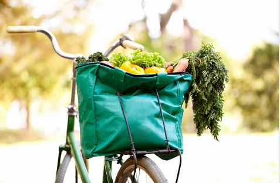
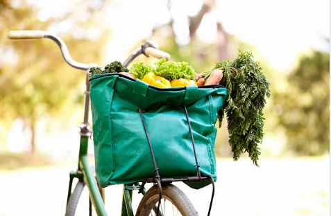

Uso del plástico, una relación tóxica que amenaza a la fauna marina
La ONU Medio Ambiente lanzó una campaña en la que reta a todas las personas a evitar el uso excesivo del plástico.
Según la Organización de las Naciones Unidas (ONU), ocho millones de toneladas de plástico terminan en los océanos cada año, causando la muerte de varios animales marinos. Han pasado más de 50 años desde que se masificó el uso de este material. GreenPeace, organización ambientalista, estima que una bolsa de plástico puede crearse en unos 15 segundos, pero puede demorar hasta 500 años en desintegrarse completamente.
“En el caso de las tortugas piensan que es un agua mala o una medusa, que es parte de su alimento, entonces se les atora en su esófago y se asfixian. Esto les ocasiona la muerte. En el caso de las aves se enredan en el él y no pueden volar, no pueden desplazarse y mueren”, explicó a RPP el biólogo Arturo Ángeles.
Más plástico que peces en el mar
Debido a estos datos, la ONU Medio Ambiente busca mantener los mares limpios a través de la una campaña que tiene como eslogan "rompe las relaciones tóxicas". En el video de presentación se explica cómo es que el plástico afecta nuestras vidas y las de los demás. También se explica cómo evitar utilizando análogos en otros materiales como el vidrio, el aluminio o la porcelana, además de la tela para los bolsos.
"Hay suficientes restos de plástico en el mundo para cubrir un país entero del tamaño de Argentina", explicó Roland Greyer a la BBC en julio del año pasado.
GreenPeace estima que para el año 2050 habrá más plásticos que peces en el mar, pues al ritmo en el que se está desechando el plástico en los mares, para esa fecha habrá 12 mil millones de residuos de plástico en las aguas de los océanos.
¿Por qué el peligro?
El plástico es un material cuya materia prima es el petróleo, que es un recurso no renovable y difícil de procesar. Hasta el 2017, la organización estimaba que alrededor del 9% del plástico desechado se ha reciclado. Sin embargo el 79% ha quedado en vertederos o abandonado en el medio ambiente.
Esta cifra muestra que, aunque se haya concientizado a las personas en diversas partes del mundo, los esfuerzos son insuficientes para recuperar la materia prima del plástico. Más bien, se prefiere lanzar el plástico a vertederos en los que permanecerá por décadas o cientos de años. Solo el 12% se lleva a incineración, lo cual tampoco es una solución porque al quemar este material se liberan toxinas al aire.

Entre el 2013 y el 2017, la campaña Hazla por tu playa (Hazla.pe) de Life Out Of Plastic recogió 124 toneladas de desechos en 783 playas y sistemas acuáticos. | Fuente: Audio: RPP / Foto: AFP